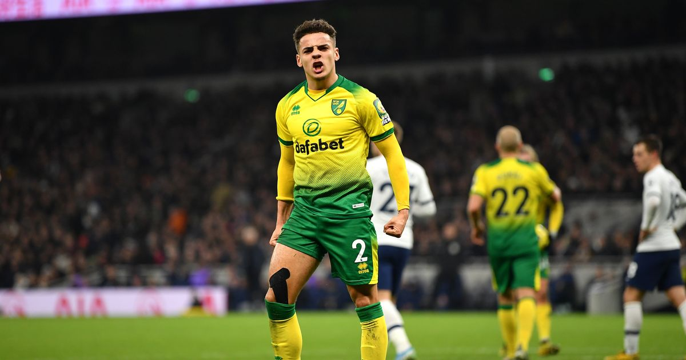
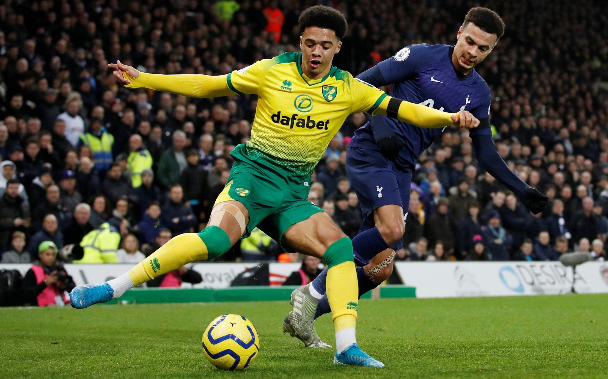
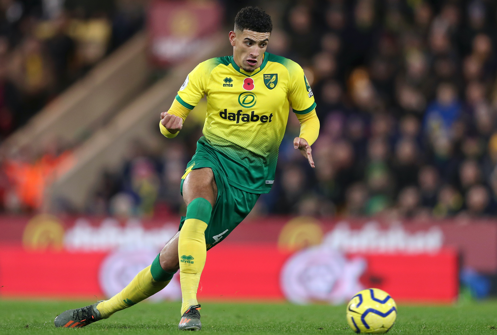
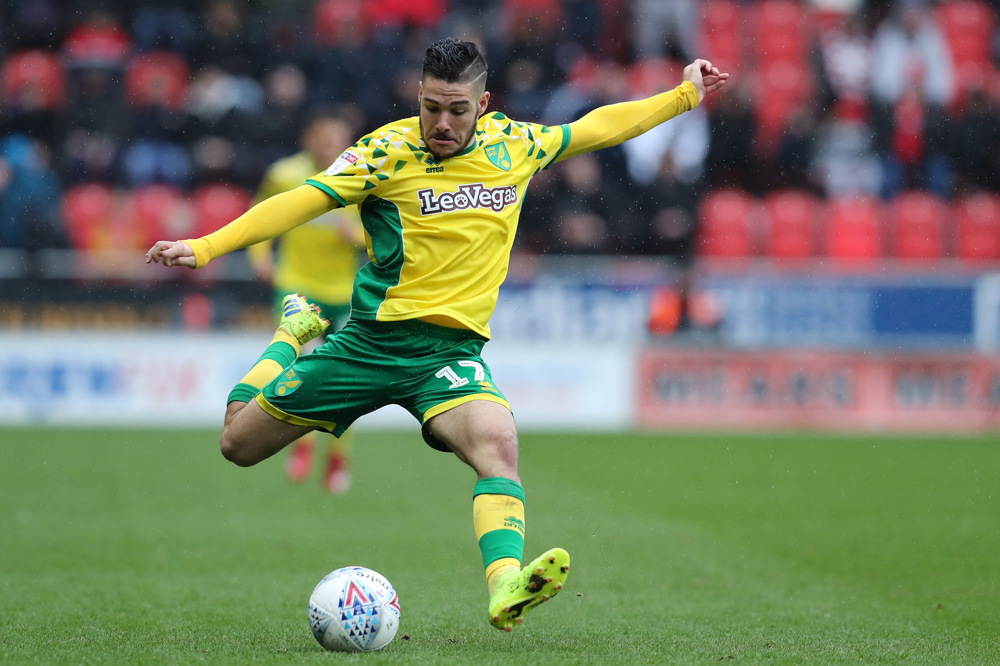

-
Norwich have several young players that have been linked with bigger clubs this season and most, if not all, will leave the club this summer. Here are possible destinations for five of the Canaries’ most promising players:
- Position: RB
- Age: 20
- Value: $22 million
Many Spurs fans are unhappy with their current starting option at right-back: Serge Aurier. I’m not sure that Aarons is ready to take on the starting role just yet, it may be beneficial for him to be the understudy to Aurier until he’s gained enough experience at a top level.

Aarons may also be competing with Kyle Walker-Peters once he returns from a successful loan spell at Southampton and Japhet Tanganga is also available to deputize on the right side.
If Aurier is sold, Aarons and Walker-Peters would be an interesting rotational pair at right back. I have a feeling though that Mourinho will keep Aurier around for at least one season more to ensure a smooth transition at the back.
With a valuation of $22 million, Aarons won’t come cheap, although the buying team will have some leverage due to Norwich’s second tier status.
Aarons would provide a much needed attacking threat from the fullback position, the question is will he be able to adapt to playing under the microscope of a Mourinho coached side? The step-up from Norwich to Tottenham is big, but Aarons has already proved he isn’t afraid of the bright lights with impressive performances against Liverpool, Manchester United and Everton this season.
- Position: LM/CAM/RM
- Age: 22
- Value: $22 million
Cantwell can turn seemingly nothing into a goal scoring opportunity using deft flicks and clever dribbling to create space for himself and others. He has six goals and two assists in the Premier League this season. Cantwell is an exciting offensive player with a burst of quickness and flair which is well suited to Leicester’s possession heavy system.

The Foxes’ wingers play high and narrow and left winger Harvey Barnes often drops deeper into the half-space interchanging with James Maddison. This role would suit Cantwell well with his ability to pick out passes and his dribbling talent. Playing on the left in a narrower front three would also allow Cantwell to cut in on his preferred right foot. Cantwell could also fill the role that Maddison plays as an “attacking eight.”
Barnes and Ayoze Pereze have the wing positions locked up for now and Maddison doesn’t seem likely to leave either. However, Leicester will likely either qualify for the Champions or Europa League next season and having Cantwell would be a nice depth option for the increased schedule. At only 22-years-old Cantwell still has a lot of room to grow.
- Position: LB
- Age: 22
- Value: $12 million
Jamal Lewis has been a name floated as a possible backup for Robertson. The wiry defender rose through Norwich’s academy before breaking into the senior squad in 2018. His best attribute is his dribbling on the wings. His pace allows him to fly by opposition wing players but his end product is often lacking with just 0.04 xA/90.
 Robertson happens to be the best attacking left back in the world, so the thought is he would be able to impart some of his wisdom on Lewis. Playing in Klopp’s system should get the best out of Lewis, allowing him to bomb down the flanks while developing his crossing skills. His defensive skills seem adequate as well and he should have greater peace of mind with Virgil van Dijk playing behind him.
.png)
- Position: CB
- Age: 22
- Value: $13 million
Leipzig do an outstanding job of developing young players by giving them chances in the Bundesliga and Champions League. He fits the mold of a Leipzig center back: athletic and calm on the ball. He already has a path to follow with Leipzig center backs Dayot Upamecano and Ibrahima Konaté thriving in Germany.

Godfrey is often noted for his pace at center back, equally impressive is his passing range. Godfrey sprays the ball to both wings accurately and has the finesse to play a ball over the top as well.
He would have the chance to learn from rising star manager Julian Nagelsmann who favors a high press and quick build up. Godfrey’s ball-playing ability would fit perfectly with Leipzig’s vertical passing style and his athleticism would allow him to be an effective presser as well. Leipzig have a penchant for snapping up young players like Godfrey and I wouldn’t be surprised to see him join other young English players in Germany. The only sticking point would be his price.
- Position: RW/LW/CAM
- Age: 23
- Value: $16 million
I believe Buendía’s style of play is more suited to La Liga than the Premier League, he is a highly technical player. Buendía would bring a more creative presence to the wing, according to Squawka, Emiliano Buendía has the 4th most chances created in the Premier League this season. Buendía keeps the ball on a tightrope when he’s dribbling and has a low center of gravity allowing him to fend off defenders. He seemed to be given the freedom to roam at Norwich and was especially dangerous on the counter attack which would fit in well with Simeone’s style of play. Buendía could also potentially deputize in the second striker role that Félix normally plays. Atlético’s attack struggled this season with the departure of Antoine Griezmann and the injury problems of Diego Costa and João Félix. Ángel Correa is currently the first choice right midfielder/winger at the Wanda Metropolitano. Correa plays like a meaner version of Buendía and has five goals and seven assists in La Liga this season. Buendía would also have the opportunity to work under fellow Argentine Diego Simeone.

Buendía would have to adjust to the intense style of play that Simeone demands. The allure of Champions League football and returning to Spanish football would be hard to resist.
I don’t care how good you think the Championship is, Buendía is too good to be playing second division football. Adding him would spice up Atlético’s squad and could help Los Rojiblancos mount a more competitive campaign in La Liga next season.